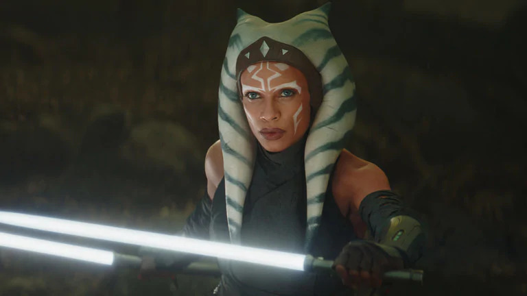

KUIIL
A vapor farmer on Arvala-7, Kuiil came to seek peace in an out of the way world, which is now being trespassed upon by criminals and mercenaries. He has worked a lifetime to be free of servitude, and offers valuable skills for those willing to meet his price.
IG-11
One of a series of dangerous assassin droids largely outlawed in the galaxy, IG-11 is a hired gun programmed to follow Bounty Hunters Guild protocols to the letter. Reliable and durable, IG-11's thin body is built on an armored substrate that can withstand repeated assaults. It is against his programming to be captured, and he has built-in last-ditch fail-safes to prevent that from ever happening.

CARA DUNE
A veteran of the Galactic Civil War who fought under the banner of the Rebellion, Cara Dune is a seasoned warrior who hails from Alderaan. After the fall of the Empire, she reinvented herself first as a mercenary, and most recently as the Marshal of Nevarro.
THE MANDALORIAN
The Mandalorian, known to a few as Din Djarin, is a battle-worn bounty hunter, making his way through a dangerous galaxy in an uncertain age.
GREEF KARGA
Once an expeditor for the Bounty Hunters Guild, Greef Karga ran the trade on Nevarro, a middle-man, a connector between clients and bounty hunters. Now Magistrate of Nevarro, Greef is cleaning up the rough-and-tumble world with the help of Marshal Cara Dune.
DR. PERSHING
A man of science, Dr. Pershing works first for the mysterious Client, but ultimately serves Moff Gideon. He wants to study the Child.
THE CHILD
A mysterious alien pursued by bounty hunters on behalf of Imperial interests.

FENNEC SHAND
An assassin and elite mercenary, Fennec Shand has worked for all the top syndicates. Clever, capable, and cunning, she is not to be underestimated and is full of surprises.

Q9-0 (ZERO)
A bug-eyed protocol droid with modified programming, Q9-0 — or "Zero" to his colleagues -- operates with precision timing.
XI'AN
An athletic and agile Twi'lek, Xi'an is the bladed weapons expert of a gang of criminals working with the Mandalorian.
MOFF GIDEON
Imperial Moff Gideon is fiercely determined to capture the Child, known as Grogu. Clever and formidable, Gideon values power and knowledge. He wields the ancient Darksaber, an artifact of great import to Mandalorians.
MAGISTRATE MORGAN ELSBETH
The coldhearted Magistrate of Calodan, Morgan Elsbeth clings to power with an iron fist and holds many secrets.
THE MYTHROL
Once the Mandalorian's bounty, the fledgling Mythrol is now trying to make a living in the office of the Magistrate of Nevarro.

AHSOKA TANO
Ahsoka Tano, a Togruta female, was the Padawan learner to Anakin Skywalker and a hero of the Clone Wars. Alongside Anakin, she grew from headstrong student into a mature leader. But her destiny laid along a different path than the Jedi.
BOBA FETT
With his customized Mandalorian armor, deadly weaponry, and silent demeanor, Boba Fett was one of the most feared bounty hunters in the galaxy. A genetic clone of his “father,” bounty hunter Jango Fett, Boba learned combat and martial skills from a young age. Over the course of his career, which included contracts for the Empire and the criminal underworld, he became a legend.
LUKE SKYWALKER
Luke Skywalker was a Tatooine farmboy who rose from humble beginnings to become one of the greatest Jedi the galaxy has ever known. Along with his friends Princess Leia and Han Solo, Luke battled the evil Empire, discovered the truth of his parentage, and ended the tyranny of the Sith. A generation later, the location of the famed Jedi master was one of the galaxy’s greatest mysteries. Haunted by Ben Solo’s fall to evil and convinced the Jedi had to end, Luke sought exile on a distant world, ignoring the galaxy’s pleas for help. But his solitude would be interrupted – and Luke Skywalker had one final, momentous role to play in the struggle between good and evil.
{kind=link}
{kind=link}
{kind=link}
{kind=link}
{kind=link}
{kind=link}
{kind=link}
{kind=link}
{kind=link}
{kind=link}
{kind=link}
{kind=link}
{kind=link}